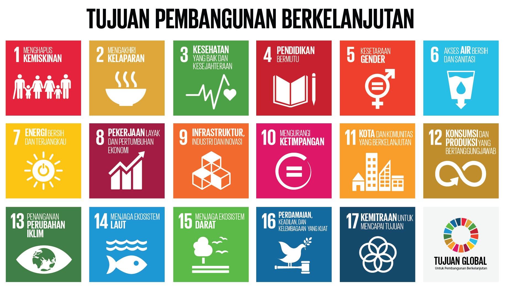

SDGs (Sustainable Development Goals) atau TPB (Tujuan Pembangunan Berkelanjutan) adalah kumpulan tujuan pembangunan berkelanjutan yang ditetapkan oleh Perserikatan Bangsa-Bangsa (PBB) untuk dicapai pada tahun 2030. Disepakati dan diumumkan oleh negara maju maupun negara berkembang dalam sidang umum PBB pada September 2015 untuk mewujudkan kehidupan yang lebih baik untuk seluruh orang di bumi ini. SDGs memiliki 17 tujuan, yaitu:

Salah satu tujuan utama dalam Sustainable Development Goals (SDGs) adalah Tujuan ke-3, yaitu Kesehatan yang Baik dan Kesejahteraan. Dibuat untuk memastikan kehidupan yang sehat dan mendukung kesejahteraan untuk semua orang di segala usia. Namun, pencapaian tujuan ini tidak mudah karena masih banyak isu global yang menjadi tantangan utama dalam mewujudkannya. Salah satunya adalah tingginya angka kematian akibat penyakit menular, seperti malaria, TBC, dan HIV/AIDS. Penyakit ini menjadi penyebab utama hilangnya jutaan nyawa setiap tahun, apalagi di kalangan menengah kebawah dan di daerah terpencil masalah ini diperparah dengan layanan kesehatan dan alat pencegahan yang sangat sulit diakses. Sebagai contoh, penyakit malaria secara global ditemukan sebanyak 249 juta kasus dan menyebabkan 608.000 kematian hanya dalam satu tahun pada tahun 2022.
SumberUntuk mengatasi isu ini, diperlukan solusi yang menyeluruh. Menurut saya, salah satu saran untuk mengatasi isu ini dapat dengan meningkatkan akses ke pelayanan kesehatan dan perawatan medis di daerah-daerah terpencil melalui kerja sama pemerintah dan organisasi internasional. Selain itu, dapat juga dilakukan kampanye edukasi yang dapat memberitahu masyarakat tentang pentingnya pencegahan. Lalu dapat juga diadakan pemeriksaan setahun sekali, mungkin di daerah daerah kecil pemeriksaan di gratiskan tetapi di daerah kota-kota besar mungkin dapat diberikan diskon saja dan orang orang pun dapat membantu membiayai untuk pemeriksaan di daerah daerah kecil dengan donasi
SDG 3: Kesehatan yang Baik dan Kesejahteraan untuk Semua memiliki 11 sasaran global yang bertujuan untuk meningkatkan kesehatan dan kesejahteraan masyarakat di seluruh dunia. Sasaran ini tercapai melalui indikator-indikator yang mencakup berbagai aspek kesehatan, antara lain:
Untuk mengurangi rasio angka kematian ibu hingga kurang dari 70 per 100.000 kelahiran hidup pada tahun 2030. Indikator yang digunakan untuk mengukur kemajuan di area ini antara lain:
Untuk mencapai tujuan ini, SDG 3 bertujuan mengakhiri kematian bayi baru lahir dan balita yang dapat dicegah. Sasaran global adalah menurunkan angka kematian neonatal hingga 12 per 1.000 kelahiran hidup dan angka kematian balita hingga 25 per 1.000.
Untuk mengakhiri epidemi AIDS, tuberkulosis, malaria, dan penyakit tropis yang terabaikan pada tahun 2030.
Untuk mengurangi angka kematian dini akibat penyakit tidak menular seperti penyakit jantung, kanker, dan diabetes hingga sepertiga pada tahun 2030, serta meningkatkan kesehatan mental dan kesejahteraan.
Untuk memperkuat pencegahan dan pengobatan penyalahgunaan zat, termasuk narkotika dan penggunaan alkohol yang membahayakan.
Untuk mengurangi angka kematian akibat cedera fatal kecelakaan lalu lintas.
Untuk menjamin akses universal terhadap layanan kesehatan seksual dan reproduksi, termasuk keluarga berencana dan informasi yang tepat.
Untuk memastikan akses terhadap pelayanan kesehatan dasar yang aman, efektif, berkualitas, dan terjangkau bagi semua orang.
Untuk memperkuat pengendalian tembakau dan konsumsi alkohol.
Untuk mendukung penelitian medis dan akses terhadap vaksin serta obat untuk penyakit menular dan tidak menular.
Untuk meningkatkan kapasitas tenaga kesehatan dan kesiapsiagaan darurat kesehatan global.
Secara keseluruhan, indikator-indikator ini berfungsi untuk memantau pencapaian sasaran global SDG 3, yang berfokus pada peningkatan kesehatan dan kesejahteraan secara menyeluruh, baik untuk mencegah penyakit menular maupun tidak menular, meningkatkan kesehatan mental, dan memastikan akses universal terhadap layanan kesehatan yang berkualitas.
Sumber 1 Sumber 2Dikarenakan SDGs sendiri sejak awal sudah merupakan kerja sama dari seluruh dunia yang melibatkan seluruh pihak di seluruh dunia melalui semua negara anggota PBB untuk mencapai tujuan pembangunan berkelanjutan untuk 2030. Dengan waktu yang panjang dan hasil yang dapat dirasakan di seluruh dunia, maka upaya untuk mencapainya pun dapat dilakukan oleh semua orang. Apalagi peran dari kerja sama internasional pun juga tidak kalah penting untuk mencapai tujuan SGDs. Kerja sama internasional untuk membantu mewujudkan tujuan SDGs dapat dilakukan secara bilateral, regional, multilateral maupun dengan kerja sama yang lainnya, contoh:
Melalui kesepakatan kerja sama Indonesia dengan India dalam bidang kesehatan pada 28 Februari 2019 menyepakati beberapa kegiatan untuk masuk ke daftar Plan of Action, yaitu: Penyusunan Roadmap antara regulator kefarmasian (obat-obatan) dan regulator pangan, Penelitian dan pengembangan dalam ilmu kesehatan, Berbagi pengalaman dan best practice dalam kerja sama Telemedicine, Pengembangan Sumber Daya Manusia Kesehatan, termasuk penyusunan kurikulum dan standar kompetensi untuk Pendidikan Perawat dan Pembangunan kapasitas dan saling tukar best practices dalam kerja sama pengobatan tradisional.
ASEAN merupakan organisasi kerja sama regional yang mencakup berbagai bidang, salah satunya adalah bidang kesehatan. Indonesia berperan aktif dalam penanggulangan ancaman penyakit menular, mendapatkan obat-obatan, mengadakan seminar kesehatan, mengadakan program dan wajib kerja dokter spesialis, mengadakan gerakan masyarakat hidup sehat dan mempelopori ASEAN Car Free Day.
Melalui Kementerian Kesehatan dalam kerja sama dengan Global Health Strategies yang bertujuan untuk meningkatkan kesehatan semua orang di semua negara dengan mempromosikan kesehatan dan menghilangkan penyakit, kecacatan, dan kematian yang dapat dihindari. Indonesia berperan untuk menyebarkan informasi kesehatan kepada masyarakat dan mendorong perilaku hidup sehat melalui kampanye kesehatan nasional.